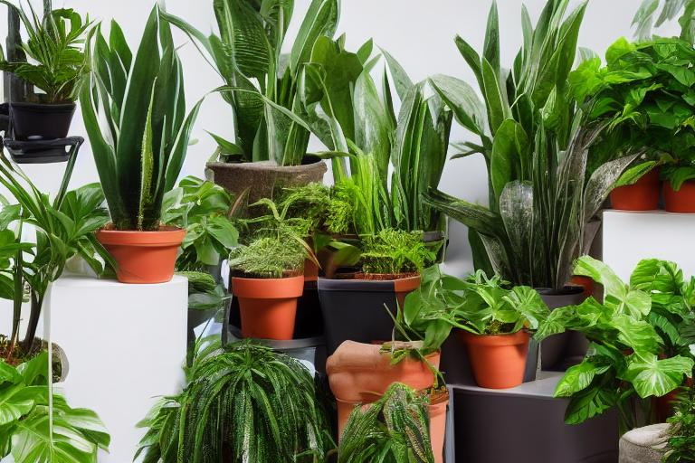

Cómo limpiar y pulir tu plantarium para mantener su belleza

Un plantarium (un terrario o un pequeño recipiente de vidrio con plantas) se mantiene bonito cuando el cristal está limpio y se retiran las hojas muertas a tiempo. No necesita «pulirse»: basta una limpieza suave, y algunos gestos habituales pueden incluso dañarlo.
Qué evitar
- lija, estropajos o productos abrasivos sobre el vidrio, que lo rayan;
- alcohol, limpiadores perfumados y desinfectantes cerca de las plantas;
- pulverizar productos de limpieza o «polvos antihongos» directamente sobre las hojas.
Limpiar el vidrio
Retira la tapa si la tiene. Limpia el exterior con un paño suave o de microfibra ligeramente húmedo. Para el interior, usa un paño o una esponja suave sujeta a una varilla, agua tibia y, si hace falta, una gota de jabón neutro, cuidando de que no caiga sobre el sustrato. Pasa después un paño con agua limpia y seca el cristal.
Cuidar las plantas
Retira las hojas amarillas o marrones con pinzas o tijeras limpias, porque se pudren rápido en un ambiente húmedo. Quita el polvo de las hojas con un pincel suave y no rocíes nada sobre ellas.
Vigilar el sustrato
Busca moho blanco o gris en la superficie. Retíralo con una cuchara limpia y abre el recipiente unas horas para que circule el aire. Si reaparece, suele haber demasiada humedad.
Una rutina sencilla
- Cada semana: revisar y quitar las hojas muertas.
- Cada mes: limpiar el vidrio.
- Cada pocos meses: comprobar la humedad del sustrato y ventilar.
Coloca el plantarium donde un gato o un perro no pueda tirarlo ni mordisquear su contenido: varias plantas de terrario son irritantes o tóxicas para ellos.